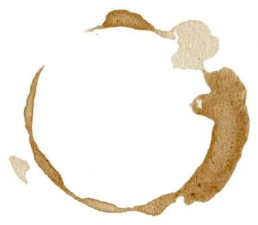

Autumn · The Philosopher Overflow A cup that is full must let go For silence to deepen and flow Each drop that is freed Meets the soul’s gentle need And the emptiness teaches to grow  IdentityLanguageWork